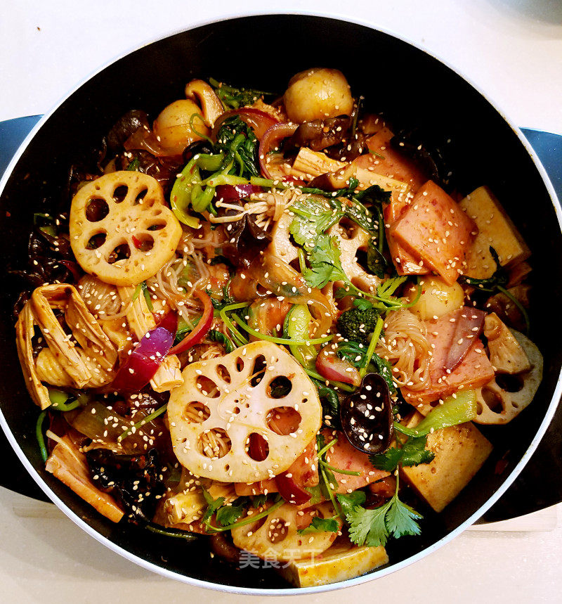

Spicy Hot Pot

Description
So Easy, Anyone Can Make It.
Ingredients
- A small piece of hot pot base
- Green onion, ginger, and garlic
- 1 tablespoon of doubanjiang (fermented bean paste)
- Sesame seeds (optional)
- Soy sauce
- Oyster sauce
- Your choice of ingredients (meat, vegetables, etc.)
Steps
- Start by heating oil in a pan. Add green onion, ginger, and garlic, and stir-fry until fragrant.
- Add the hot pot base and doubanjiang (fermented bean paste), stirring until well combined.
- Finally, add your pre-cooked ingredients and mix everything together.
Adjust quantities and taste to your preference.
This is the simplest Chinese recipe I've ever tried!